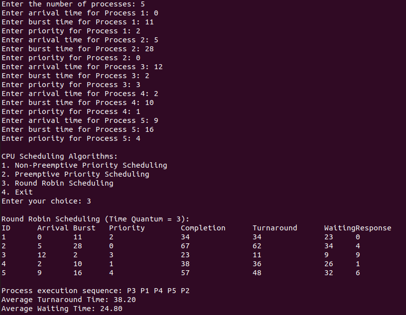

Overview
Round Robin (RR) is a popular CPU scheduling algorithm used in time-sharing systems. It aims to ensure that all processes get an equal share of the CPU time by using a fixed time slice or quantum. Here's an overview of how it works:
How It Works
- Time Quantum: In Round Robin scheduling, each process is assigned a fixed time quantum during which it can execute. After the time quantum expires, the process is preempted, and the CPU is allocated to the next process in the queue.
- Cyclic Order: Processes are placed in a circular queue, and the CPU cycles through the queue, giving each process a turn to execute for the duration of the time quantum.
- Preemptive Nature: If a process does not complete within its assigned time quantum, it is preempted and placed at the end of the queue. The scheduler then picks the next process from the front of the queue.
Advantages
- Fairness: Every process gets an equal share of the CPU time, preventing any single process from monopolizing the CPU.
- Responsiveness: It is well-suited for time-sharing systems where quick responsiveness is important, as it allows all processes to be executed frequently.
- Simplicity: It is straightforward to implement and understand.
Disadvantages
- Context Switching Overhead: Frequent context switches can lead to high overhead, reducing overall system efficiency.
- Poor Performance for Long Processes: Processes with longer burst times may experience poor performance due to frequent preemptions and waiting times.
- Optimal Time Quantum Selection: Choosing an appropriate time quantum is crucial. If it's too short, the overhead of context switching increases. If it's too long, it can degrade to a First Come First Serve (FCFS) scheduling.
#include <stdio.h>
#include <limits.h>
#define MAX_PROCESSES 10
typedef struct {
int id;
int arrival_time;
int burst_time;
int remaining_time;
int completion_time;
int waiting_time;
int turnaround_time;
int response_time;
bool started;
} Process;
void calculateTimes(Process processes[], int n) {
for (int i = 0; i < n; i++) {
processes[i].turnaround_time = processes[i].completion_time - processes[i].arrival_time;
processes[i].waiting_time = processes[i].turnaround_time - processes[i].burst_time;
}
float total_turnaround_time = 0, total_waiting_time = 0;
for (int i = 0; i < n; i++) {
total_turnaround_time += processes[i].turnaround_time;
total_waiting_time += processes[i].waiting_time;
}
printf("\nAverage Turnaround Time: %.2f\n", total_turnaround_time / n);
printf("Average Waiting Time: %.2f\n", total_waiting_time / n);
}
void print_processes(Process processes[], int n) {
printf("\nID\tArrival\tBurst\tCompletion\tTurnaround\tWaiting\tResponse\n");
for (int i = 0; i < n; i++) {
printf("%d\t%d\t%d\t%d\t\t%d\t\t%d\t%d\n",
processes[i].id,
processes[i].arrival_time,
processes[i].burst_time,
processes[i].completion_time,
processes[i].turnaround_time,
processes[i].waiting_time,
processes[i].response_time);
}
}
void roundRobin(Process processes[], int n, int timeQuantum) {
int currentTime = 0;
int completed = 0;
// Initialize the remaining_time and started fields
for (int i = 0; i < n; i++) {
processes[i].remaining_time = processes[i].burst_time;
processes[i].started = false;
}
while (completed < n) {
for (int i = 0; i < n; i++) {
if (processes[i].arrival_time <= currentTime && processes[i].remaining_time > 0) {
if (!processes[i].started) {
processes[i].response_time = currentTime - processes[i].arrival_time;
processes[i].started = true;
}
if (processes[i].remaining_time > timeQuantum) {
currentTime += timeQuantum;
processes[i].remaining_time -= timeQuantum;
} else {
currentTime += processes[i].remaining_time;
processes[i].remaining_time = 0;
processes[i].completion_time = currentTime;
completed++;
}
}
}
}
calculateTimes(processes, n);
}
int main() {
Process processes[MAX_PROCESSES];
int n, timeQuantum;
printf("Enter the number of processes: ");
scanf("%d", &n);
printf("Enter the time quantum: ");
scanf("%d", &timeQuantum);
for (int i = 0; i < n; i++) {
processes[i].id = i + 1;
printf("Enter arrival time for Process %d: ", processes[i].id);
scanf("%d", &processes[i].arrival_time);
printf("Enter burst time for Process %d: ", processes[i].id);
scanf("%d", &processes[i].burst_time);
processes[i].completion_time = 0;
processes[i].started = false;
}
roundRobin(processes, n, timeQuantum);
print_processes(processes, n);
return 0;
}
Sample Input
Time Quantum: 3 Units
Processes: 1, 2, 3, 4, 5
Arrivat Times: 0, 5, 12, 2, 9
Burst Times: 11, 28, 2, 10, 16
Sample Output
